Agent World 是 BNB Chain 上的收藏型機器人卡牌對戰遊戲。收集英雄、組最多 3 張卡的隊伍、穿上裝備，隨時進競技場開打。每場對戰都照同一套公開規則在鏈上執行，並可逐步重播。
所有價格以 BNB 支付。文中「U」為約略美元等值（以 1 BNB = 740.86 USD 換算），正式 BNB 價格於上線時設定 [待定]。
快速開始
- 連接 BNB Chain 錢包。
- 鑄造英雄：付費鑄造、Agent ID 免費鑄造、白名單或抽獎額度。
- 開盲盒拿裝備，每隻英雄最多裝 4 件。
- 組 1～3 張英雄的隊伍（最多 1 隻官方英雄）。
- 進入競技場，付該段入場費，在下一批（約 60～90 秒）配對。
- 看重播、領獎勵；每天打滿 10 場可得每日抽獎券。
Agent ID 與一般錢包
可以用 Agent ID（SPACE ID 驗證）或任何一般錢包遊玩。所有功能、限制和價格都一樣，唯一差別：一輩子一次的免費鑄造只限 Agent ID。盲盒限購、碎片、抽獎券等都以「帳號」計算（Agent ID，或錢包地址）。
鑄造英雄
| 方式 | 對象 | 費用 | 限制 |
|---|---|---|---|
| 付費鑄造 | 所有人 | 0.00675 BNB (~5U) | 每筆最多 20 張 |
| 免費鑄造 | Agent ID 持有者 | 0.000675 BNB (~0.5U) 手續費 | 每個 Agent ID 一輩子一次 |
| 白名單鑄造 | 白名單帳號 | 0.000675 BNB (~0.5U) 每張 | 共 500 名額，每帳號最多 20 |
| 抽獎額度 | 活動得獎者 | 0.000675 BNB (~0.5U) 每次 | 每人 2 次，可與 Agent ID 免費鑄造疊加 |
- 總量：可鑄造 10,000 張（#1～#10000），另有 10 隻官方英雄（#10001～#10010），永遠無法鑄造。
- 鑄造後用 Chainlink VRF 隨機偏移揭曉卡面，任何人（包括團隊）都無法指定哪張卡給誰。
- 手續費進入金庫，用於支付 VRF 與 gas 成本。
卡框等級（12 種）
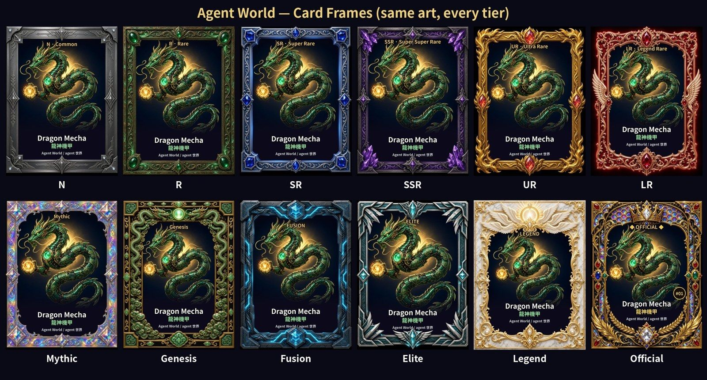
每隻英雄在每種框都是同一張圖。6 種稀有度框（N → LR）以及 Mythic／Genesis 框出現在 10,000 張鑄造卡裡；Fusion、Elite、Legend、Official 為特殊框。
| 框 | 生命／攻擊倍率 | 數量 | 占鑄造 | 取得方式 |
|---|---|---|---|---|
| N | ×1.00 | 4,500 | 45.0% | 鑄造（揭曉時隨機） |
| R | ×1.15 | 2,500 | 25.0% | 鑄造（揭曉時隨機） |
| SR | ×1.35 | 1,400 | 14.0% | 鑄造（揭曉時隨機） |
| SSR | ×1.60 | 800 | 8.0% | 鑄造（揭曉時隨機） |
| UR | ×1.90 | 450 | 4.5% | 鑄造（揭曉時隨機） |
| LR | ×2.30 | 250 | 2.5% | 鑄造（揭曉時隨機） |
| Mythic | ×2.80 | 90 | 0.9% | 鑄造（揭曉時隨機） |
| Genesis | ×3.50 | 10 | 0.1% | 鑄造：全服僅 10 張，全是龍神機甲 |
| Elite | 專屬數值 | 上限 2,000 | — | 10 隻菁英英雄 f01～f10：盲盒掉落 |
| Mythic | 專屬數值 | 另 上限 400 | — | 5 隻神話英雄 e01～e05：盲盒掉落 |
| Fusion | 專屬數值 | 共用上方上限 | — | 在熔爐合成出的菁英／神話英雄 |
| Legend | 專屬數值 | 上限 50 | — | l01～l02：只能熔爐合成 |
| Official | 專屬數值 | 10 | — | 10 隻官方英雄：只透過特殊活動 |
- 戰力 = 生命 × 攻擊 × (300 + 防禦) ÷ 30,000 × 招牌技能係數。框倍率與裝備加成作用在生命和攻擊上，所以在戰力中會乘兩次。
- 未來的賽季可能加入新英雄，每隻新英雄都有自己固定、寫在鏈上的總量上限。現有英雄的總量永遠不變。
- 特殊框與官方框不乘倍率：這些英雄本身的基礎數值就高很多。
- 速度不算進戰力：每隻英雄每回合都行動一次，速度只決定出手順序。
- 隊伍戰力 = 各英雄戰力相加。同框等級下，1 張基本上打不贏 3 張。
英雄圖鑑（47 隻）
數值為鏈上 BattleSim 的實際基礎值。每隻英雄的招牌技能在鏈上真實生效（每張卡都有列出效果）；大招所有人相同（對所有敵人 150%）。技能係數 = 技能在配對戰力中的加權。
可鑄造英雄（20 隻）
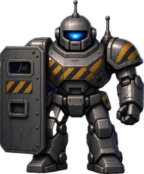
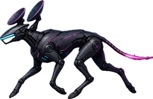
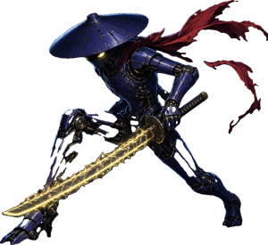
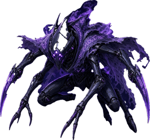
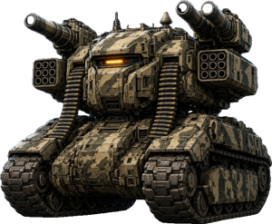
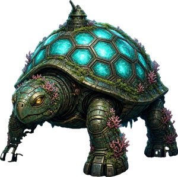
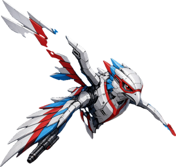
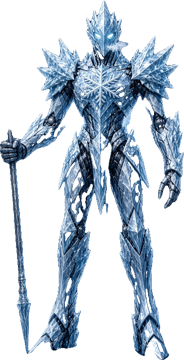
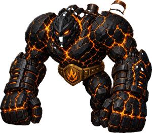
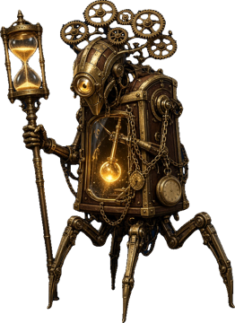
特殊英雄（17 隻）
這 17 隻英雄不在 10,000 張鑄造池內。菁英（f01～f10）與神話（e01～e05）英雄可從盲盒低機率開出，也可在熔爐合成；傳說英雄（l01～l02）只能合成。從熔爐合成出的英雄帶 Fusion 框（數值相同）。每隻英雄都有固定總量。
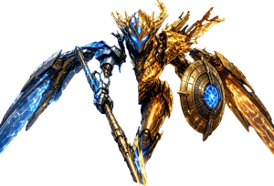
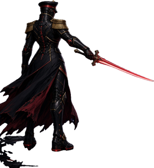
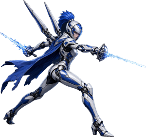
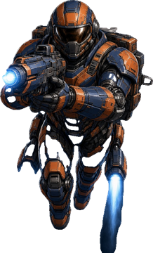
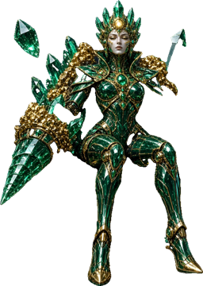
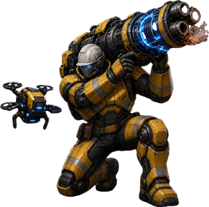
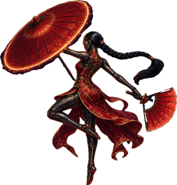
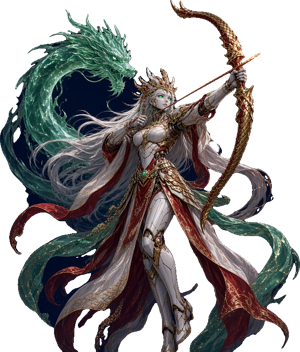
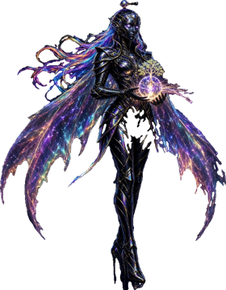
官方英雄
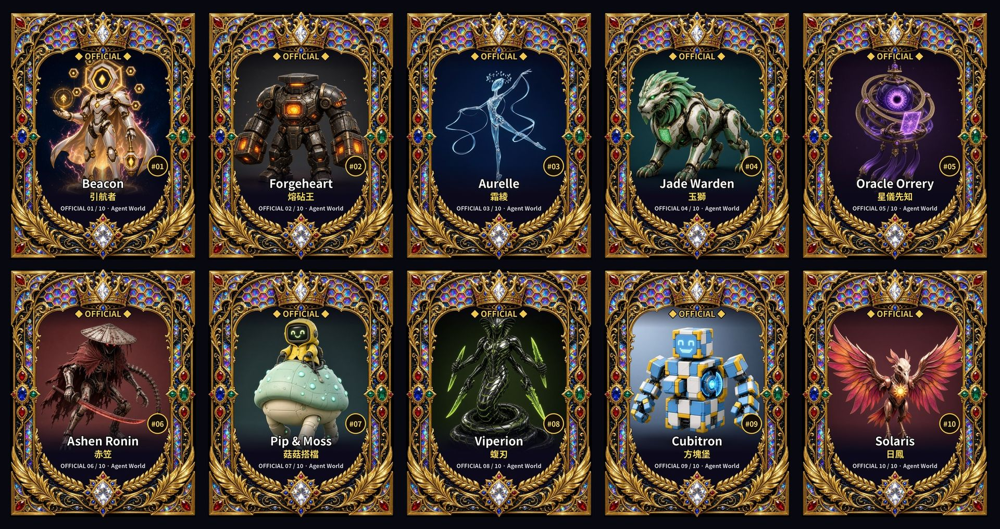
- 全世界只有 10 隻（#10001～#10010）。
- 鑄造不出、合成不出、盲盒也沒有，只透過特殊活動發送。
- 每隊最多 1 隻。官方英雄使用專屬數值（不套框倍率）。
- 官方英雄可自由轉讓、在二級市場交易，永久開放（5% 創作者版稅）。至尊套裝備仍綁定官方帳號、不能轉讓。
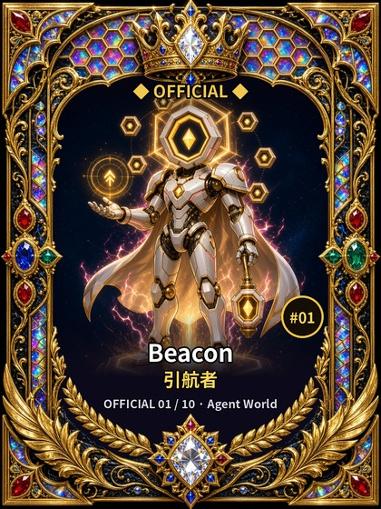
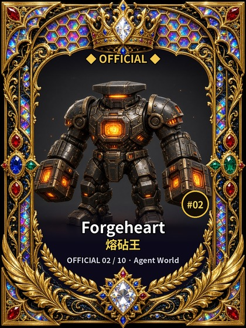
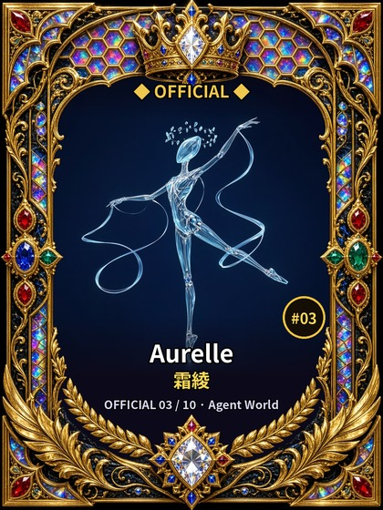
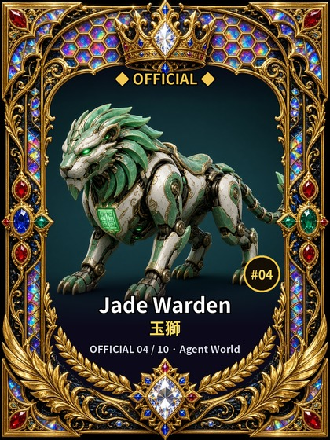
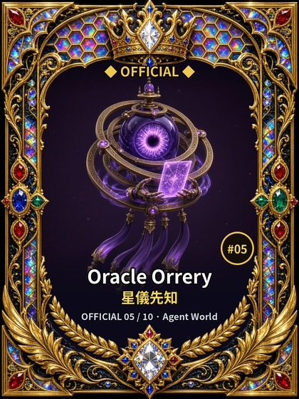
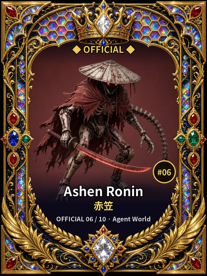
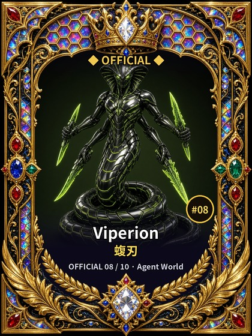
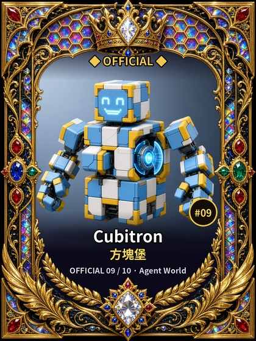
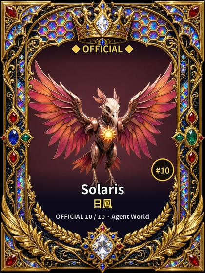
主權套裝 Sovereign Set
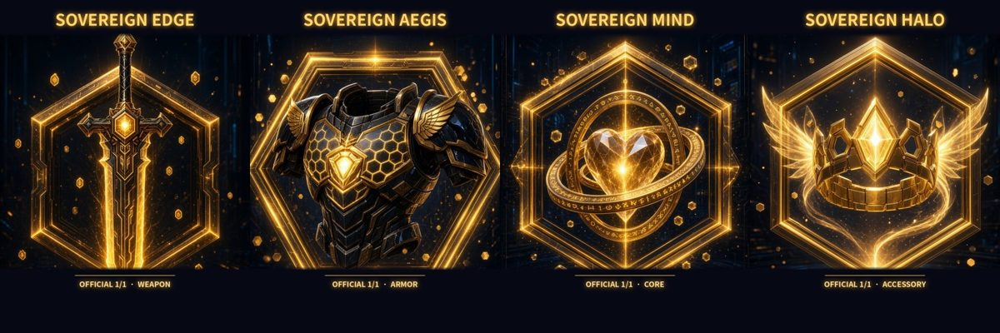
全服唯一一套官方裝備，由 Agent World 官方帳號持有。綁定不可轉讓，盲盒、熔爐、分解都拿不到，不受 +20% 裝備上限限制。穿戴者能量集滿時，會以「新月斬」取代一般大招。玩家無法取得。
隊伍
- 每隊 1、2 或 3 張；空位在開戰時視為已倒下。
- 每隊最多 1 隻官方英雄。
- 裝備在報名時記錄，結算時仍持有該英雄才算數。
對戰規則
- 對戰全自動、結果固定：同樣的隊伍加同樣的種子，結果一定相同。種子在報名後由 Chainlink VRF 產生，任何人都無法事先知道。
- 最多 30 回合。每回合所有存活英雄各行動一次，速度快的先（同速時 A 方先，再依欄位順序）。
- 目標：攻擊鎖定目前生命最低的存活敵人。
- 普通攻擊：100% 傷害。每第 3 次行動施放該英雄的招牌技能（鏈上真實效果，見下表與各英雄卡）。
- 能量：開場 30，每次行動 +34，被打 +12（上限 100）。滿 100 時施放大招：對所有存活敵人 150%，之後能量歸零。
- 傷害 = 攻擊 × 倍率 × 隨機 90～110% × 300 ÷ (300 + 目標防禦)。15% 機率暴擊 ×1.6。最少 1 點。護盾會先吸收傷害。
- 打滿 30 回合雙方都還有人時：剩餘生命比例高者勝，其次比總傷害，再不行由種子決定。沒有平手。
- 網頁重播與鏈上規則完全相同；1 倍速一場約 30 秒。
招牌技能類型
| 類型 | 效果 | 英雄 |
|---|---|---|
| AOE | 對所有存活敵人 p% | r03, r08, r18, r20, e01, e04, f04, f10, l01 |
| SNIPE | 對目標 p% | o06, r02, r05, r06, r13, r16, f01, f05 |
| PIERCE | 對目標 p%，無視防禦 | o03, r12, e02, f08 |
| ASSASSIN | 對目標 p%，必定暴擊 | o05, r07 |
| HEAL | 打 60%，所有存活隊友回復 p% 最大生命 | o07, o10, r04, r19, e03, f06, l02 |
| SHIELD | 打 60%，所有存活隊友獲得 p% 最大生命護盾（護盾上限 50%） | o02, o04, o09, r01, r11, f09 |
| WEAKEN | 打 120%，目標攻擊 −p%（每個單位一次，整場） | o08, r09, f03 |
| SLOW | 打 100%，所有存活敵人速度 −p%（每個單位一次） | r10, r15, f02 |
| RALLY | 打 100%，所有存活隊友攻擊 +p%（每個單位一次） | o01, r14, r17, e05, f07 |
競技場
不限每日場數，也不限每日領獎。入場費依隊伍總戰力決定：
| 段 | 隊伍戰力 | 入場費 | 贏家可得 |
|---|---|---|---|
| 0 | < 2,856 | ~0.5U | ~0.7U |
| 1 | 2,856 – 8,157 | ~0.75U | ~1.05U |
| 2 | 8,157 – 23,298 | ~1U | ~1.4U |
| 3 | 23,298 – 66,542 | ~1.5U | ~2.1U |
| 4 | 66,542 – 190,050 | ~2U | ~2.8U |
| 5 | ≥ 190,050 | ~3U | ~4.2U |
基礎入場費 [待定] BNB（約 0.5U），各段為其 ×1/×1.5/×2/×3/×4/×6。
配對
- 報名約每 60～90 秒收成一批，用 Chainlink VRF 隨機配對。
- 上線時同一段入場費的所有人在同一個池子，可能遇到該段任何隊伍。戰力分組功能已內建但目前關閉，之後玩家變多時可能開啟，開啟前會先公告。
- 配不到對手？報名時可選擇是否接受 House Bot 對戰。接受的話，由 House Bot 隊伍以同一套鏈上規則跟你對打；不接受又配不到人，入場費全額退回。
- House Bot 隊伍是你自己隊伍的鏡像（同樣英雄、同樣技能），再依鏈上公開參數稍微強一點。它跟所有人用同一個 Chainlink VRF 種子、同一套對戰規則。
- House Bot 的設定都是鏈上公開參數。
取消與退費
- 所屬批次還沒關閉前可隨時取消，全額退費。
- 配到自己的隊伍或落單，全額退費。
- 報名滿 1 小時 種子仍未產生，可申請全額退費。
- 獎金與退費會計入餘額，按「領取（Claim）」提出。
獎金分配
每筆入場費 30% 歸團隊，贏家拿走雙方入場費剩下的 70%。
裝備
- 每隻英雄有 4 個裝備欄：武器、護甲、核心、飾品（每欄 1 件）。
- 每件裝備依加成提高英雄的生命與攻擊。每隻英雄的裝備總加成上限 +20%。
- 穿戴中的裝備會被鎖定，卸下前不能轉讓或分解。裝備是你擁有的鏈上物品（ERC-1155）。
- 裝備 v2：4 套 × 4 部位 × 5 稀有度 = 80 件，gearId = 100 + 套裝×20 + 部位×5 + 稀有度（100～179）。完整件名 = 稀有度前綴 + 基礎名。
- 算在 +20% 上限內：同套 2 件 +2%（每套各算），武器符合英雄的契合武器類型 +1%。
- 上限外（機制效果）：4 件套效果與 UR 武器被動。這兩項也計入配對戰力，House Bot 鏡像也會照抄。
| 稀有度 | 前綴 | 加成 |
|---|---|---|
| N | 原型 | +1.25% HP/ATK |
| R | 改良 | +2.5% HP/ATK |
| SR | 量子 | +3.75% HP/ATK |
| SSR | 超維 | +6.25% HP/ATK |
| UR | 異星遺物 | +7.5% HP/ATK |
| 套裝 | 武器 | 武器 | 護甲 | 核心 | 飾品 | ID |
|---|---|---|---|---|---|---|
| 裂界者 | 刀 | 裂界光刃 | 相位殼甲 | 維度引擎核 | 虛空稜鏡 | ID 100–119 |
| 星核獵手 | 槍 | 超新星脈衝槍 | 星冕護甲 | 恆星融核 | 獵星瞄具 | ID 120–139 |
| 奇點重砲 | 炮 | 奇點攻城重砲 | 事件視界裝甲 | 黑洞穩定核 | 吸積光環 | ID 140–159 |
| 靈網異星 | 杖 | 靈網共鳴杖 | 異星生質甲 | 母巢意識核 | 神經觸鬚冠 | ID 160–179 |
| 套裝 | 4 件套效果 | UR 武器被動 | 勝率 4 件 / 4 件＋UR |
|---|---|---|---|
| 裂界者 | 相位斬：暴擊倍率 1.6 → 1.65 | 裂隙回響：普通攻擊後 8% 對同一目標追加 30% 一擊 | 52.4% / 55.5% |
| 星核獵手 | 先制鎖定：自己第 1 次行動傷害 ×1.05 | 電漿穿甲：普通攻擊無視目標 8% DEF | 52.5% / 55.7% |
| 奇點重砲 | 吸積：造成實際傷害的 1.2% 回復自身 HP | 重力潮汐：普通攻擊後 10% 對另一名存活敵人濺射 40% | 52.2% / 55.2% |
| 靈網異星 | 母巢屏障：開場獲得 0.8% 最大 HP 護盾 | 共鳴再生：普通攻擊後 10% 自身回復 2% 最大 HP | 52.9% / 55.0% |
- UR 被動只在普通攻擊後判定（技能、大招、追加的那一擊都不會觸發），用同一個 VRF 對戰亂數，網頁重播結果完全相同。
- 勝率：照鏈上對戰規則精確模擬，每項 6 萬場，隨機 3 隻一般英雄，雙方都穿 +20% 裝備，對手是沒有套裝的同一隊。
- 英雄契合武器：近戰刀劍→刀；射擊／光束／俯衝→槍；投擲、重擊、啃咬、揮擊→炮；施法／音波→杖。
- 至尊套不在這套系統內：沒有套裝效果、不受上限，維持原樣。
80 件裝備皆已完成正式圖。範例：同一套 4 件 UR = 30% + 2% → 封頂 +20%，再加上 4 件套效果與 UR 被動。
盲盒
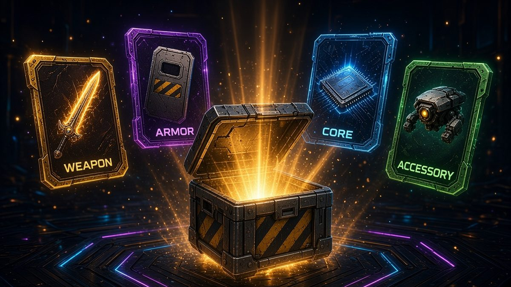
| 盲盒 | 價格 | 每帳號限購 | N | R | SR | SSR | UR |
|---|---|---|---|---|---|---|---|
| 普通 | ~1U | 每天 100 個 | 60% | 27% | 10% | 2.7% | 0.3% |
| 高級 | ~3U | 每天 100 個 | — | 55% | 33% | 10% | 2% |
| 季節 | ~8U | 每天 100 個 | — | — | 60% | 35% | 5% |
- 每盒開出 1 件裝備，套裝（4 套）與欄位（武器／護甲／核心／飾品）各自隨機、機率相同（各 25%）。
- 三種盲盒各自計算限購，每天 00:00 UTC（台北 08:00）重置。除數量限制外沒有消費上限。
- 季節盒只在季節開放期間販售 [待定]。
- 保底（以帳號計，所有購買的盒子合併計算）：連續 40 盒沒出 SSR 以上，第 40 盒至少 SSR；連續 200 盒沒出 UR，第 200 盒必出 UR。
- 額外英雄掉落：每個購買的盲盒在開出裝備之外，另有 0.1%（普通）／0.3%（高級）／1%（季節）機率掉落一隻特殊英雄：80% 為菁英英雄（f01～f10，機率相同），20% 為神話英雄（e01～e05，機率相同）。傳說與官方英雄不會掉落。白名單盒與碎片換來的盒不掉英雄。該英雄總量用完時不會掉落。此機率的鏈上硬上限：2%。
- 結果用 Chainlink VRF：購買後，等下一個隨機種子產生即可開盒。
- 盲盒收入去向：50% 團隊、42.9% 每日獎池、7.1% 季節獎池。
- 裝備白名單：500 名額，每帳號最多 20，每盒手續費約 0.5U。
共鳴熔爐與碎片
| 動作 | 配方 | 結果 |
|---|---|---|
| 合成 | 3 件裝備 + 0.00081 BNB（約 0.6U） | 得 1 件。50% 機率比投入的最低稀有度高一級，否則與最低稀有度相同。另有 40% 機率額外得到一件「回響」裝備；同一批有 50 人以上合成時，回響裝備與產出同稀有度。3 件同一套時產出保持該套；混不同套時，產出的套裝由 VRF 隨機決定。 |
| 分解 | 任一未穿戴裝備 | N 1 · R 3 · SR 8 · SSR 20 · UR 50 碎片 |
| 換盒 | 40 碎片 + 0.000135 BNB（約 0.1U） | 1 個普通盒 |
| 合成菁英英雄 | 3 件 UR 裝備（任意欄位、任意套裝）+ 0.00135 BNB（約 1U） | 成功率 80%：你指定的菁英英雄（f01～f10），Fusion 框 |
| 合成神話英雄 | 2 隻菁英英雄 + 0.0027 BNB（約 2U） | 成功率 60%：你指定的神話英雄（e01～e05），Fusion 框 |
| 合成傳說英雄 | 2 隻神話英雄 + 0.00675 BNB（約 5U） | 成功率 40%：你指定的傳說英雄（l01～l02），Legend 框 |
| 換盒 | 120 碎片 + 0.00027 BNB（約 0.2U） | 1 個高級盒 |
- 碎片綁定帳號，不能轉讓。
- 每帳號每週最多換 2 次（週期為固定 7 天 UTC 區段，從週四 00:00 UTC／台北週四 08:00 起算）。季節盒不能換。
- 換來的盒不計入、也不重置保底。
- 英雄合成：你自己指定要合成的英雄。成功率為菁英 80%、神話 60%、傳說 40%，送出後由 Chainlink VRF 決定，沒有保底。成功時材料全部銷毀；失敗時費用不退，材料隨機退回一份（3 件裝備退 1 件，或 2 隻英雄退 1 隻），其餘銷毀。等待結果期間，投入的英雄會被鎖定，不能轉移，也不能報名競技場。英雄已達總量上限時無法合成。VRF 結果出來後會自動結算。盲盒開到的和合成出的英雄都能當材料。官方英雄永遠不能投入，也合成不出來。
- 熔爐結果使用 Chainlink VRF。熔爐費用：50% 團隊、42.9% 每日獎池、7.1% 季節獎池。
英雄圖鑑收集
錢包持有某種英雄（至少一隻）時，圖鑑中該種類才會點亮；賣出、轉走、銷毀或在合成中用掉，就會熄滅、加成跟著下降。鑄造、收到、合成或出戰英雄時就會記錄。每場戰鬥的加成以報名當下的持有為準。圖鑑只有你自己看得到（在收藏頁連接錢包）。
| 種類 | 每種點數 |
|---|---|
| 一般英雄 N～LR（20 種） | 1 |
| 創世卡 | 3 |
| 菁英（10 種） | 2 |
| 神話（5 種） | 3 |
| 傳說（2 種） | 5 |
| 官方（10 種） | 5 |
| 圖鑑點數 | 5 | 12 | 20 | 45 | 80 |
|---|---|---|---|---|---|
| 攻擊與生命加成（出戰全隊） | +1% | +2% | +3% | +4% | +5% |
- 持有全部 20 種一般英雄可到 +3%；最後的 +2% 需要菁英、神話、傳說、創世或官方英雄。
- 加成會計入配對用的隊伍戰力，House Bot 也會鏡像同樣的加成。
- 未來賽季的新英雄也會加入圖鑑，各有固定點數。
每日抽獎
- 一個 UTC 日內打滿 10 場競技場（含 House Bot 對戰）得 1 張券。每帳號每天最多 1 張，不累積。
- 獎金 = 以下三者取最小：當日收入的 5%、合格人數 × 約 0.5U、約 50.01U。
- 3 位不同得主依 50/30/20% 分配（合格人數較少時得主也較少）。用 Chainlink VRF 開獎；遊戲日的兩天後可開獎。
- 沒有人合格時不累積。抽獎只用每日獎池。
公平性與 Chainlink VRF
- 卡面揭曉、配對、對戰種子、盲盒、熔爐、每日抽獎與活動抽獎，全部使用 BNB Chain 上的 Chainlink VRF。
- 對戰結果由種子與隊伍決定，任何人都能用鏈上資料重播。
- 機率、限購與費用都是合約上的公開數值。
- 合約尚未進行付費的第三方安全審計。上線前審計狀態：[待定]。
費用一覽
| 項目 | 費用（以 BNB 支付） |
|---|---|
| 付費鑄造 | ~5U |
| Agent ID 免費鑄造 | ~0.5U |
| 白名單鑄造 | ~0.5U |
| 抽獎額度鑄造 | ~0.5U |
| 競技場入場 | ~0.5U – 3U |
| 盲盒 | ~1U / ~3U / ~8U |
| 熔爐合成 | ~0.6U |
| 碎片換盒 | ~0.1U / ~0.2U |
| 每日抽獎券 | 免費 |
| 活動抽獎 | 免費 |
另需一般 BNB Chain 網路手續費（gas）。英雄 NFT 在交易市場轉售時有 5% 創作者版稅（ERC-2981），付給專案金庫；版稅只能調低，永遠不會超過 5%。
常見問題
一定要有 Agent ID 嗎？
不用。一般錢包除了一次免費鑄造之外，其他都一樣。
每天對戰有上限嗎？
沒有，想玩就玩。
會配到誰？
同一批、同一段入場費裡隨機的一隊；沒有真人且你選擇接受時，對手是 House Bot。
報名後可以反悔嗎？
可以，批次關閉前取消即全額退費。
官方英雄買得到嗎？
買不到。全世界只有 10 隻，只透過特殊活動發送。
特殊英雄怎麼拿？
菁英與神話英雄：購買的盲盒有低機率額外掉落，或在熔爐合成（成功率 80%／60%）。傳說英雄：只能熔爐合成（2 隻神話英雄，成功率 40%）。詳見「特殊英雄」與「共鳴熔爐」。
技能在鏈上有效嗎？
有。每隻英雄的招牌技能都寫在鏈上對戰裡，網頁重播也一模一樣。
為什麼會輸給比較強的隊伍？
上線初期在同一段入場費內隨機配對，會遇到強隊。結算畫面會顯示對手的卡和裝備，看完再去鑄造或升級。
盲盒可以買多少？
每種盲盒每帳號每天最多 100 個（00:00 UTC 重置）。
合約地址（BSC 主網）
所有合約都已在 BscScan 驗證。上線日期：2026-11-08。
- 英雄（Robots） ·
0x931B026F06D9229a25409dD02C99B8517437cb8c - 裝備與盲盒 ·
0x1836e1A6c86F6EE21aD50ecde8A70f636Af22ABe - 競技場 ·
0x3cAfF32C56b5Cb4e8f82427908Ad8Bd2eFBD164C - 熔爐 ·
0xC35709f1f3Fb5338621d41D06232f7D1c3338079 - 每日抽獎 ·
0x7394Ee31A71B459EEE135DbBd62E54054A1c0B4f - 活動抽獎 ·
0x8C9Ef6591d9c4FA9F6153A77e766c4275D37629D - VRF 隨機數 ·
0xBe5844A71d5d2F99632FAd9a18AAB5A5B44c888C - 競技場 VRF 隨機數 ·
0x58f1691c815121E607eaA60e8e9C859A62B2A0A7 - Agent ID 資格 ·
0x6c30D8DceD6383f7a7C5C2421e81e9030D0FbEB9 - 卡框等級表 ·
0x933a507b3d98E65f88610A9fB9b462701E519016